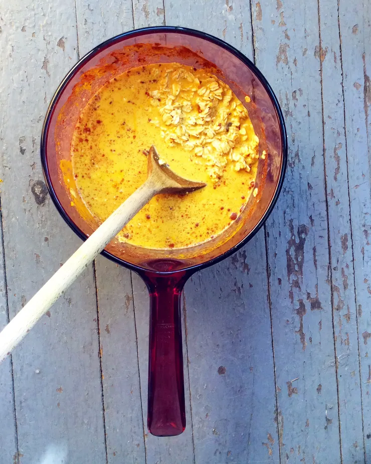

Not Your Mother's Oatmeal

Description
Oatmeal is a breakfast dish that never fails. This recipie will show
you a way to shake things up a little bit a add new flavors to your oatmeal.
I was inspired by rice pudding to add turmeric, and from there test rest of
the ingredients followed
Ingredients
- 1/2 cup oats
- 1 tsp turmeric
- 1/2 tsp cinnamon
- 1/4 tsp
- 2 dates
- 1/2 banana
- 1/4 cup walnuts
- 1 cup water
- 2 dashes salt
Steps
- Add salt, spices and water to a small pot and bring to a boil
- While water is boiling, chop dates and bananas
- When the water comes to a boil add oats and reduce heat to a simmer
- Add fruit
- When most of the water remove from heat and add to a bowl
- Garnish with crushed walnuts
- Enjoy this delicious recipe and experiment with add-ins